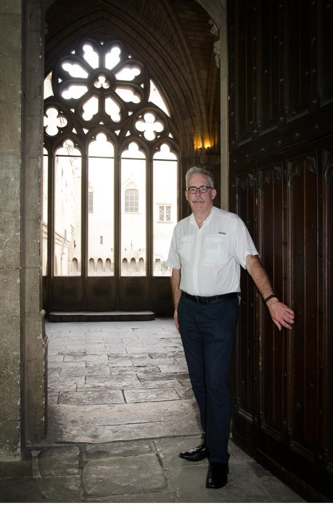
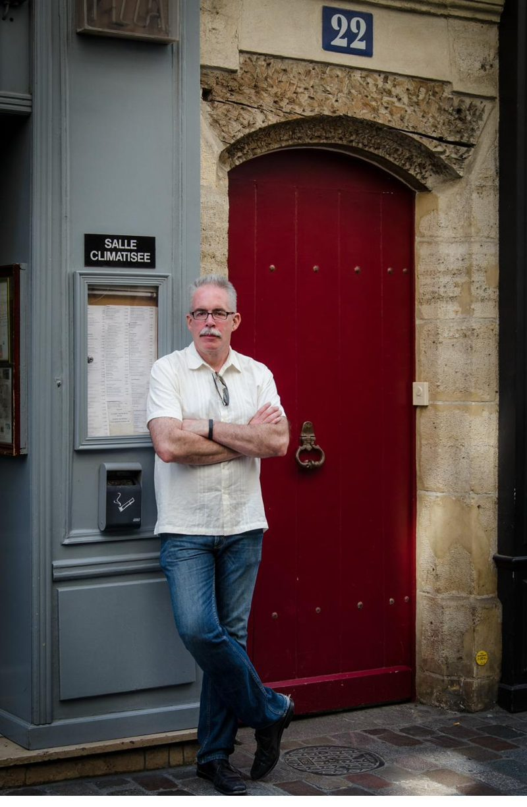

notes from a life well traveled · Tim O'Brien
Virginia · Hume · Fauquier County
There are places that earn their beauty honestly — not through architecture or artifice, but through the slow, patient layering of land and light and sky. Marriott Ranch in Hume, Virginia is one of those places. Standing on the stone path at dusk with the Blue Ridge fading into violet behind you and the last warmth of a summer evening in the air, the rest of the world feels very far away.
The ranch sits in the rolling piedmont of Fauquier County, cradled between the Bull Run Mountains to the east and the Blue Ridge proper to the west. The land here has been grazed and farmed for more than two centuries, and it carries that history lightly — in the set of a fence line, in the sway of old hardwoods, in the quiet confidence of a well-kept Georgian brick manor.
The photograph was taken in May 2024, when the fields were newly green and the sky was doing what Virginia evening skies do best: performing.
In the Moment

No. 22, Rue de la République · Avignon, France

Palais des Papes · Avignon, Provence
Place & Provenance
Fauquier County occupies the northern Virginia piedmont — that long transitional shelf between the coastal plain and the Blue Ridge. The county was established in 1759, named for Virginia's royal governor Francis Fauquier, and its fertile rolling terrain quickly made it one of the wealthiest agricultural counties in colonial America. Horse farming and grain production defined its character for generations, and both endure today.
The land that became Marriott Ranch was part of a working cattle operation assembled by the Marriott family — yes, that Marriott — beginning in the mid-twentieth century. J. Willard Marriott Sr., founder of the hotel empire, purchased the Virginia property as a personal retreat and working farm. The family operated it for decades before eventually opening it to guests, preserving the agricultural character that gives the property its authentic, unhurried atmosphere.
The mountains in the background of this photograph are the northern Blue Ridge — part of the ancient Appalachian chain, among the oldest mountain ranges on earth. They were formed some 480 million years ago and have been worn by time into the gentle, rounded ridgelines that define the Virginia landscape. At dusk, when atmospheric haze deepens the gradation of blues, the effect is precisely what gave the range its name.
The land surrounding Hume is the heart of Virginia's hunt country — a landscape of post-and-board fencing, black barns, and carefully maintained paddocks that extends across Fauquier, Loudoun, and Clarke counties. The tradition of foxhunting was brought here by English settlers in the colonial era and has never entirely left. Today the piedmont is home to several of the oldest continuously operating fox hunts in the United States, and the landscape itself has been shaped — fenced, hedged, grazed — by that equestrian tradition.
The brick Georgian manor visible at the right edge of the photograph is characteristic of the grand plantation-era architecture of northern Virginia. Built with locally fired brick and designed with the formal symmetry favored in the eighteenth and nineteenth centuries, these houses were meant to project permanence and prosperity across the open fields. Against a stormy May sky, that architectural confidence reads as something close to poetry.
The light in this photograph — that particular quality of a clearing mid-Atlantic storm at sunset, with cumulus clouds backlit in orange and the foreground still washed in the cool green of an afternoon shower — is one of the defining visual experiences of the Virginia piedmont. Painters of the Hudson River School, working just a hundred miles north, spent careers trying to capture exactly this quality of American sky. Standing in the middle of it requires nothing but presence.
"The Blue Ridge at dusk does not ask for your attention. It simply has it — whether you intend to give it or not."
There is a version of the American landscape that exists almost entirely in the mind — a pastoral ideal assembled from Currier & Ives prints and Andrew Wyeth paintings and the half-remembered drive through countryside glimpsed from the backseat of a car in childhood. Marriott Ranch, on an evening in late May, is where that imagined landscape and the actual one converge.
The stone path that winds past the brick manor, the black board fencing dividing the green fields, the white farmhouse at the far treeline, the single tall pine standing sentinel at the edge of the drive — these are not picturesque accidents. They are the accumulated aesthetic decisions of two centuries of people who understood that land, properly kept, becomes its own argument for staying.
The ranch sits at roughly 600 feet of elevation on the piedmont shelf, which places it in a peculiar atmospheric zone — high enough to catch the weather rolling off the Blue Ridge, low enough to feel the warmth rising from the Rappahannock basin to the south. The result, on an evening like this one, is a sky of unusual drama: the kind of layered, performative cloudscape that makes you stop walking and simply stand still.
The Blue Ridge in the background appears in shades of receding grey-blue, each successive ridge slightly paler than the one before it — an atmospheric perspective effect that the Blue Ridge Parkway was designed, a century ago, to exploit. From this angle, in this light, those mountains look precisely as they have looked from this particular stretch of piedmont for as long as there have been human eyes to see them.
To stand in that landscape, in the long quiet of a Virginia evening, is to feel briefly that you have earned your place in it. Not by virtue of anything you have done, but simply by having arrived — and having had the sense to look up.